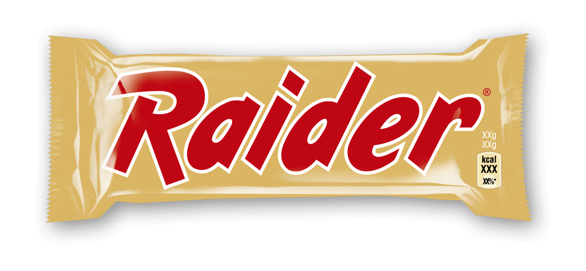
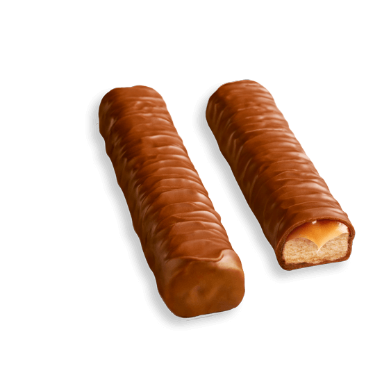
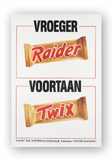
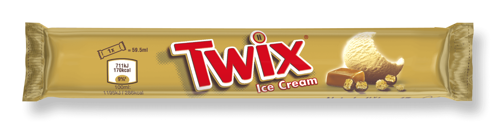
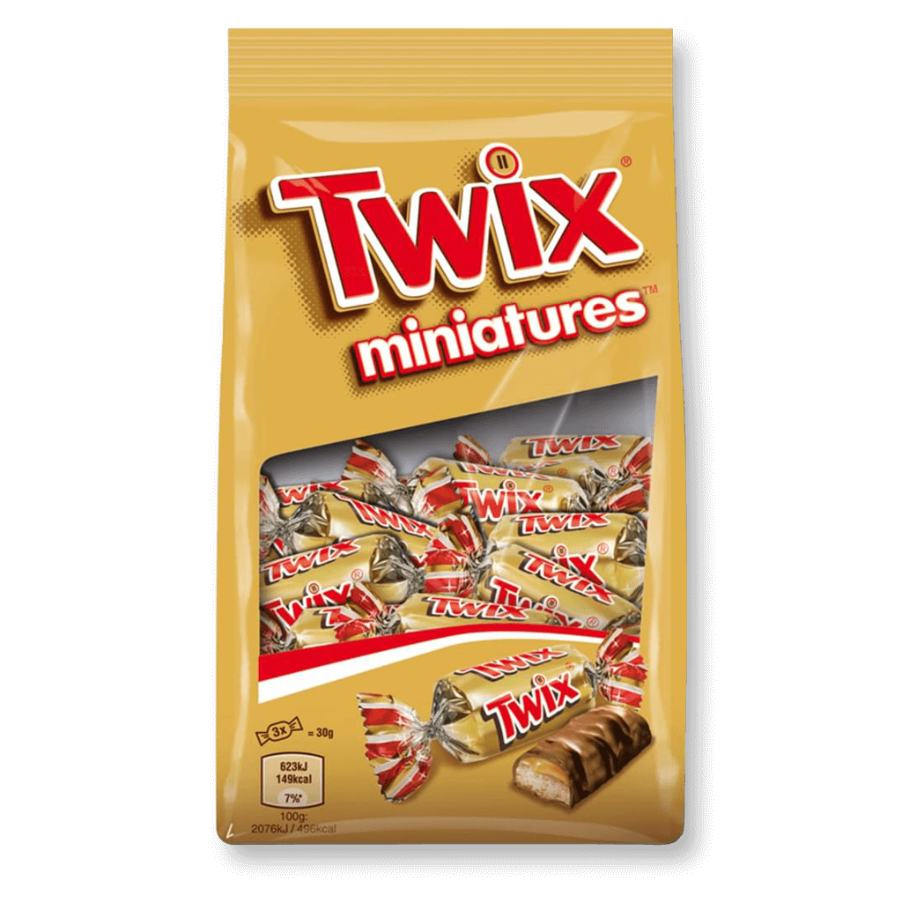
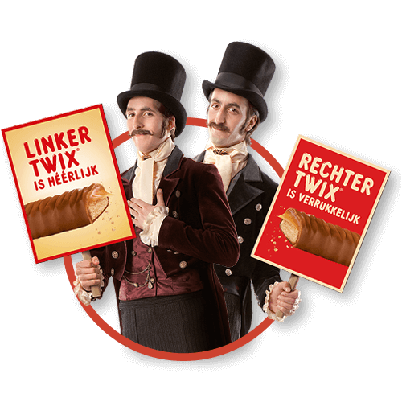

TWIX® HISTORIE
Laat ons je meenemen door de geschiedenis van TWIX®!
1967
TWIX® wordt gelanceerd in het Verenigd Koninkrijk en Nederland! In Europa wordt TWIX® aangeboden onder de naam Raider®.
1983
In 1983 wordt het assortiment uitgebreid met een kleinere versie van de RAIDER®.
1991
De RAIDER® krijgt een nieuwe naam: het merk TWIX® is geboren!
1995
TWIX® is nu ook voor de warme dagen als een ijsje verkrijgbaar met heerlijk vanille-ijs, karamel en biscuit.
1999
Het kleine plezier voor de lekkere trek wordt geïntroduceerd.
2012
"Probeer ze allebei! Welke kies jij?" - met deze oproep daagt TWIX® heel Nederland uit! Welke is jouw favoriet? Links of rechts?